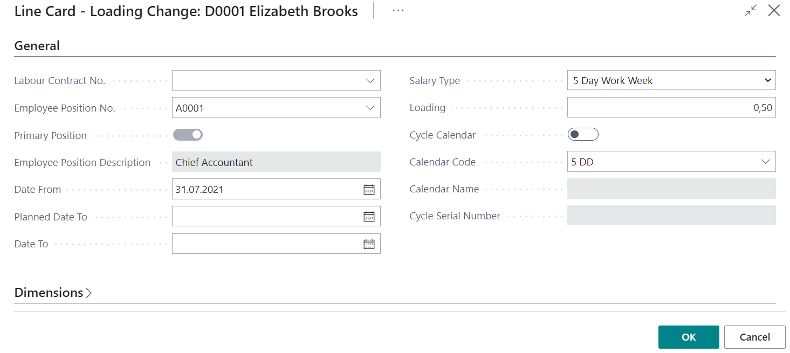
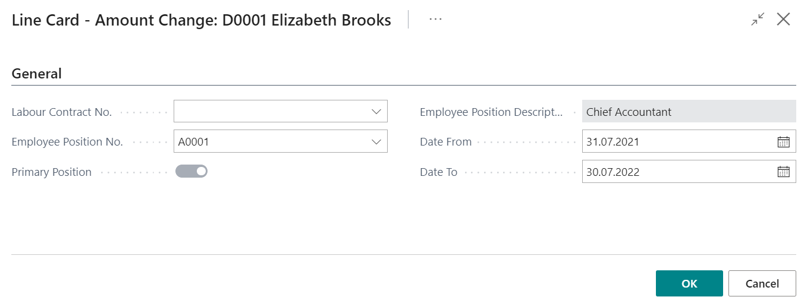

Examples of Personnel Orders
There are a several event types for personnel orders, depending of what the Line Card fields differs. In this chapter are described the examples for the all event types.
Order for Termination
The following fields are required for the order of termination:

- Termination Date;
- Termination Grounds Code – a code from the list Grounds for Termination;
- Term. Grounds Description;
- Termination Reason Code – a code from the list Termination Reasons;
- Term. Reason Description;
- Social Sign Code;
- Co-ordinated with Trade-Union – if the employee is not the member of the union, then this field is not active;
- Termination Allowance.
- Relation to Labour Contr. No.
Before the posting of the termination order, system checks:
- Is the employee recruited before the termination date;
- Is the employee not already terminated before;
- Is the employee in a trade union and is it aligned with the trade union.
If any of these conditions is not fulfilled, then the system does not allows to post the order.
Order for Position Change
The following fields are required for the order of position change:

- Labour Contract No. - If for this event an alteration to the labour contract was made, then select the alteration number and all other related fields will be filled in from the labour contract card, including payroll components;
If an alteration wasn't made then you should fill all below fields, excluding the Labour Contract No.
- Employee Position No. – position number what should be replaced;
- Primary Position – enable if it is primary position;
- Employee Position Description;
- Position Code – a code of the new position;
- Position Description;
- Department Code – a code of the department of the new position;
- Department Name;
- Social sign Code;
- Date From – from which date the new position is effective;
- Planned Date To – planned due date;
- Date To – due date of the new position. A date what comes after the previous position steps into force;
- Salary Type – aggregated or normal working time
- Loading;
- Cycle Calendar – enable if the working time is organized according to the shift;
- Calendar Code;
- Calendar Name;
- Cycle Serial Number.
Order for Loading Change
The following fields are required for the order for loading change:

- Labour Contract No. - If for this event an alteration to the labour contract was made, then select the alteration number and all other related fields will be filled in from the labour contract card, including payroll components;
If an alteration wasn't made previously then you should fill all below fields, excluding the Labour Contract No.
- Employee Position No. – position number what should be adjusted;
- Primary Position – enable if it is primary position;
- Employee Position Description;
- Date From – from which date the new conditions is effective;
- Planned Date To – planned due date;
- Date To – due date of the new conditions. A date what comes after the previous conditions steps into force;
- Salary Type – aggregated or normal working time;
- Loading;
- Cycle Calendar – enable if the working time is organized according to the shift;
- Calendar Code;
- Calendar Name;
- Cycle Serial Number.
When changing the value in the field Loading, system will change the loading at the payroll components, as well as calculates the new salary amount for the new loading.
Order for Salary Change
The following fields are required for the order for salary change:

- Labour Contract No. - If for this event an alteration to the labour contract was made, then select the alteration number and all other related fields will be filled in from the labour contract card, including payroll components;
If an alteration wasn't made previously then you should fill all below fields, excluding the Labour Contract No.
- Employee Position No. – position number what should be adjusted;
- Primary Position – enable if it is primary position;
- Employee Position Description;
- Date From – from which date the new salary is effective;
- Date To – due date of the new salary amount. A date what comes after the previous salary amount steps into force.
The new salary is entered through payroll components. All open (Date To is not specified or the date is later then order's Date From) employees salary payroll components will be closed with the date, what is the one day before this order's Date From.
Absence Order
Absence order's Line Card includes the following fields:

Tab General:
- Absence code;
- Absence Description – will be completed from the codes of absence;
- Date From - when absence starts;
- Date To – when absence ends;
- Calendar Days;
- Employee Replacing;
- Create Payroll Payment- enable if the salary for the period before the absence should be paid before the start of the absence. As a result a new absence card will be created in the Absence Register with the Cause of Absence code ALGA_PER (standard setup) Now in the Prepayment list you can filter out and pay absence pay as well as the salary for the period before the absence;
- Skip in Prepayment – enable, if this absence should be skipped in the Prepayment list;
- Split By Periods – As a result of the order posting, the system will divide the absence by calendar months by entering the field Related Entry No.. In this way, the calculation for each month will be made in the appropriate month.
Tab Business Trip:
- Business Trip Place - country;
- Business Trip Aim;
Order for Demerit
The following fields are required for the order for demerit:
- Demerit Code – a code from the list Demerits;
- Demerit Description;
- Date – order's date;
- Memo – order text written in free form.
Order on Notice
Notice order card includes the following fields:

- Termination Grounds Code – a code from the list Grounds for Termination;
- Term. Grounds Description;
- Law Article No.;
- Memo – order text written in free form;
- Termination Date.
Order for Surcharge/ Deduction
Following fields are available:

- Date – date of the surcharge or deduction;
- Component Code – a code form the list Payroll Components;
- Component Description;
- Amount – gross amount of the surcharge/ deduction;
- Memo – text written in free form.
Order on Additional Position
Like with an order for employment, also an order for additional position is possible to create on basis of the alteration of labour contract as well as by creating a new order. A new employee position is created with this event (in addition to existing ones). The following information is indicated for additional position:

- Labour Contract No. – number from the Posted Labour Contract list (if an alteration was posted for this event);
- Date From – from which date an additional position is assigned;
- Planned Date To – planned due date;
- Date To – by which date the employee is assigned an additional position. At the end of the term the previous position is restored;
- Position Code – code of the add. position;
- Department Code – code of department what is related to the add. position – inserts automatically from the position card;
- Department Name;
- Loading;
- Cycle Calendar – enable if the working time is organized according to the shift;
- Calendar Code;
- Calendar Name;
- Cycle Serial Number.
If a alteration of the labour contract was issued before the creating the order, Then the payroll components will be inserted from labour contract payroll components, which will not be able to correct. Before the posting of the add. position order, system checks weather the status of the employee is Active at the date of the orders field Date From.
Position close order
Order for the closing of the position includes the following fields:

- Labour Contract No. – number from the Posted Labour Contract list (if an alteration was posted for this event);
- Employee Position No. – indicates the position that should be closed;
- Date To – till which date the position is active.
Before the posting the order of the position closing, system checks is the employee in status active, when the position is closed.
Cancelling the posted orders
It is possible to cancel all order, as well as only a specific line. Order or order line can be cancelled from the posted order, but when using the personnel order with the Event Type Cancellation, only a separate line can be cancelled.
- Cancelling with the posted order
Open the list Posted Personnel Order List
Find the order that should be canceled.
Can cancel the entire order by clicking on
 and
and  , or cancel only a specific line by clicking on
, or cancel only a specific line by clicking on  and
and 

If the order is canceled through the posted orders, then the description why the contract has been canceled can not be added to the system, as well as a document can't be created. But it is the only way to cancel the entire order.
- Cancellation of the Order using the Event Type Cancellation. The cancellation order consists of the following fields:
- Order No. to Cancel – a posted order number to be canceled;
- Order Line No. to Cancel – indicates which line should be canceled;
- Cancellation Reason Descr.
Cancel can any type of order on condition that there is no salary list created. However, it should be remembered that orders must be canceled successively - this means that if, for example, an employee has been employed with an Employment order, and lately has been changed a salary with Amount Change order, then, to cancel the Employment order, at first, the order of the amount change should be cancelled. The canceled orders from the system do not disappear from the system and they can be viewed in the list of posted orders, as well as in Employee card's section Employee Payment Entries.